Beyond Score Centering:
What Else Can We Optimize In Async RL?

First, some notation. In async RL the sampler \(\mu\) and the trainer \(\pi\) are decoupled: the sampler generates trajectories with the weights it holds, and the trainer takes optimizer steps on that data while it keeps updating. If a trajectory reaches the trainer at step \(k\) and was sampled by \(\mu = \pi_{\theta_{k-\mathrm{a}}}\), we say its policy age is \(\mathrm{a}\), i.e. the trainer is now computing gradients on data from a policy \(\mathrm{a}\) steps old.
1Why Do Old Trajectories Dominate The Update In Async RL?
Rather than starting with theory and notation, let us first look at what happens when trajectories of different ages reach the trainer. An interesting finding is that without SC, a trajectory's policy-gradient norm grows roughly linearly with its age, while with SC this trend is well suppressed.
The former is clearly bad. In principle, a token's influence on the policy update should depend roughly only on its advantage and otherwise be treated equally; in some settings one may even want to weaken the influence of very old trajectories. Here instead, the older a trajectory, the more it dominates the gradient update. We discuss the bias introduced by stale trajectories later, but even from a training stability perspective alone, the large differences in gradient norms across samples can already destabilize training.
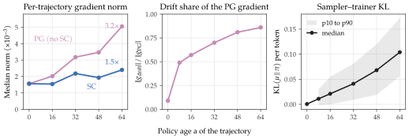
The figure above naturally raises two questions: why does the gradient grow linearly with age without SC, and how does SC flatten that line? To answer them, we go back to the policy gradient itself. On-policy, the gradient of the objective is \[ \nabla J = \mathbb{E}_{a\sim\pi}\big[A\,\nabla\log\pi(a)\big]. \] Under async, samples come from the sampler \(\mu\), and the trainer actually computes \[ \mathbb{E}_{a\sim\mu}\big[A\,\nabla\log\pi(a)\big]. \] To make this easy to see, we work in the logit space of a single token. Write \(e_a\) for the one-hot vector of \(a\) and \(p = \pi_{\theta_k}(\cdot\mid s)\). Under a softmax, \(\nabla_z\log\pi(a) = e_a - p\), so the PG gradient for one sampled token is \[ g_{\mathrm{PG}} = A\,(e_a - p). \] But \(a\) was drawn by the sampler, so we take the expectation over the sampler with \(A\) inside. Write \(q = \mu(\cdot\mid s)\) and note that \(\mathbb{E}_{a\sim\mu}[e_a] = q\). Then \[ \mathbb{E}_{a\sim\mu}\big[A\,(e_a - p)\big] = \underbrace{\mathbb{E}_{a\sim\mu}\big[A\,(e_a - q)\big]}_{\text{signal}} \;+\; \underbrace{\mathbb{E}_{a\sim\mu}[A]\,(q - p)}_{\text{drift}} . \] The signal term does not depend on the gap between the two policies, while the norm of the drift term grows linearly with that gap. The gap itself grows roughly linearly with age: every trainer step moves the policy by about \(\delta\) in a similar direction, so at age \(\mathrm{a}\) \[ \lVert q - p\rVert \approx \mathrm{a}\,\lVert\delta\rVert , \] and the drift term grows linearly in \(\mathrm{a}\). Even if the trainer were doing a random walk, the gap would still grow as \(\sqrt{\mathrm{a}}\), which is more than enough to wreck training stability. This explains what we observe.
It is worth adding that, as several earlier blogs point out (for example this one), the drift term of the policy gradient, mapped back to the objective, adds a term to the on-policy objective being maximized: \[ -A\,D_{\mathrm{KL}}(\mu\|\pi) \] So far we argued for removing the drift from the standpoint of training stability. Another reading is that it hands the trainer a KL loss whose strength we do not control, which is not a desirable objective; we come back to this later.
This form also restores some good properties of the on-policy version, such as subtracting a constant baseline leaving the expected policy gradient unchanged; we do not dwell on them here.1
1 For a constant baseline \(c\), \(\mathbb{E}_{a\sim\mu}\big[c\,(e_a - q)\big] = c\,(q - q) = 0\), so subtracting it leaves the expected SC gradient unchanged; without centering, \(\mathbb{E}_{a\sim\mu}\big[c\,(e_a - p)\big] = c\,(q - p) \neq 0\). A fuller derivation is in these slides.
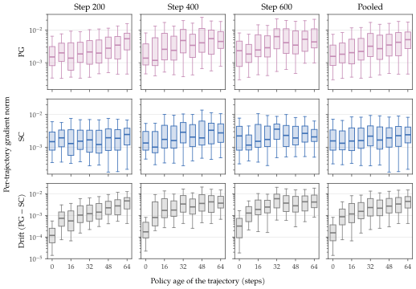
2What SC Solves, And What Is Left To Solve
With that motivation, SC simply removes the drift term: in policy-gradient space it subtracts \[ \mathbb{E}_{a\sim\mu}[A]\,\mathbb{E}_{a\sim\mu}[\nabla\log\pi(a)] , \] and it is natural that the gradient norm under SC shows no clear correlation with age.
After SC, what on-policy actually wants and the gradient we actually compute are, respectively, \[ g_{\mathrm{PG}} = \mathbb{E}_{a\sim\pi}\big[A\,(e_a - p)\big], \quad g_{\mathrm{SC}} = \mathbb{E}_{a\sim\mu}\big[A\,(e_a - q)\big]. \] The Jacobian behind them is the same, so the difference between the two depends only on the gap between \(p\) and \(q\) (token level) and between \(\pi\) and \(\mu\) (policy level).
This suggests that any method that starts from the gap between \(\mu\) and \(\pi\) may be a good way to improve further on top of SC.
3What Should We Do On Top Of SC?
So what is not a good method? SC combined with importance sampling (IS), we suspect.
Doing SC first and then IS is clearly off. Ignoring truncation, the gradient for one token is \(\tfrac{p(a)}{q(a)}\,A\,(e_a - q)\). Taking the expectation over the sampler, the IS ratio first moves the distribution back to \(\pi\): \[ \mathbb{E}_{a\sim\mu}\Big[\tfrac{p(a)}{q(a)}\,A\,(e_a - q)\Big] = \underbrace{\mathbb{E}_{a\sim\pi}\big[A\,(e_a - p)\big]}_{\text{on-policy}} \;+\; \underbrace{\mathbb{E}_{a\sim\pi}[A]\,(p - q)}_{\text{new drift}} . \] This does nothing to shrink the gap between \(p\) and \(q\); it introduces a new drift instead.
What if we do IS first and then SC, as the original paper describes: use IS to move the distribution on-policy, then apply SC? Without truncation and with exact IS, this is pointless. After IS the expectation is already under \(\pi\), where the score is centered at \(p\), \[ \mathbb{E}_{a\sim\mu}\Big[\tfrac{p(a)}{q(a)}\,A\,(e_a - p)\Big] = \mathbb{E}_{a\sim\pi}\big[A\,(e_a - p)\big], \] so SC does nothing: what it subtracts already has zero expectation under \(\pi\).
With truncation, write the post-IS weight as \(w(a) = f\big(p(a)/q(a)\big)\). SC is then effectively applied on a new distribution \[ \nu(a) = \frac{w(a)\,q(a)}{Z},\qquad Z = \sum_{a} w(a)\,q(a), \] where \(f(\cdot)\) is the processing after IS, such as the truncation in the paper. The score is then centered at \(\nu\), and the expected gradient becomes \[ \mathbb{E}_{a\sim\mu}\big[w(a)\,A\,(e_a - \nu)\big] = Z\,\mathrm{Cov}_\nu(A,\, e_a). \] Clearly, there is no guarantee whether this new distribution or the plain \(\mu\) is closer to the target \(\pi\). It is a rather ill-defined operation.So the reading in the SC paper that IS and SC are orthogonal, and can simply be stacked, is not right: neither SC followed by IS nor IS followed by SC gives a well-defined correction. See these slides for details.
So what is a good method? Yihua's blog has one that follows this design principle: \[ \mathcal{L}_{\mathrm{SC}} \;-\; \beta_{\mathrm{a}}\,D_{\mathrm{KL}}(\mu\,\|\,\pi),\qquad \beta_{\mathrm{a}} = \frac{\beta_0}{\sqrt{\mathrm{a}}} , \] where \(\mathcal{L}_{\mathrm{SC}}\) is the objective after SC. It first removes the whole drift term with SC, then explicitly adds back a KL penalty that pulls the trainer toward the sampler that generated each token. This shrinks the gap between the two distributions and, with it, the bias of the policy gradient after SC. Earlier work has also explored such a penalty: Divergence-Augmented Policy Optimization adds a divergence between the behavior policy and the current policy to keep off-policy updates small and safe.
Note that, unlike the implicit \(-A\,D_{\mathrm{KL}}(\mu\|\pi)\) in PG, the coefficient here is always positive and independent of the advantage. It is a controllable knob that helps us reduce the discrepancy caused by the difference between the two distributions.
One more point: why give the new KL penalty a mysterious coefficient proportional to \(\frac{1}{\sqrt{\mathrm{a}}}\)? Recall that the gradient of the KL penalty is troublesome because it gives trajectories of different ages an unbalanced influence on the batch. If every update step were fully independent, the norm of the KL term would grow as \(\sqrt{\mathrm{a}}\). Later in training, however, consecutive updates point in more and more consistent directions: the gap between an old policy and the current one looks more like steps stacking up along one line, and the norm grows closer to \(\mathrm{a}\) (Figure 3). So \(\beta_{\mathrm{a}}\) can decay over the course of training, \[ \beta_{\mathrm{a}} = \frac{\beta_0}{\sqrt{\mathrm{a}}} \;\longrightarrow\; \frac{\beta_0}{\mathrm{a}} , \] further reducing the influence of very old policies on the KL penalty.
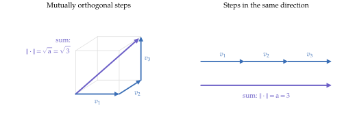
4What Kind Of Mask Do We Actually Need?
We saw above that combining SC with IS does not make much sense. So why do combinations such as SC + TIS and SC + MIS still help stabilize training in many experiments?2
2 TIS (truncated importance sampling), first proposed in Yao et al. (2025), reweights each token by the trainer-to-sampler probability ratio and caps it at a constant, \(\min\big(\pi(a)/\mu(a),\,C\big)\), to correct the training-inference mismatch. MIS (masked importance sampling), first proposed in Liu, Li et al. (2025), instead sets the importance weight to zero, masking the update, when the ratio falls outside a trusted range.
The reason is simple: the masking or truncation these combinations carry on top of IS also happens to restrict updates at token positions where \(p\) and \(q\) differ a lot. They use \(\frac{\pi(a\mid s)}{\mu(a\mid s)}\) as a surrogate to decide whether to restrict an update.
Since we already know that bad updates happen when \(p\) and \(q\) differ too much, why take the long way round through the IS ratio to make this mask decision? A metric that follows the idea of SC more directly is the KL between the two distributions at each state \(s\): \[ d(s) = D_{\mathrm{KL}}\big(\mu(\cdot\mid s)\,\|\,\pi(\cdot\mid s)\big) = \sum_{a} q(a)\,\log\frac{q(a)}{p(a)}, \] and we keep only the positions with \(d(s) \le \tau\): \[ g = \mathbb{1}\big[d(s) \le \tau\big]\; A\,(e_a - q). \] Although this metric does not consider the outer, policy-level layer, it looks at the full next-token distribution at each state, which is more information than the ratio of a single token.
It also preserves the good baseline property. For a ratio-based mask, write the per-token weight it puts on the gradient as \(\lambda(a)\): for example the truncated IS weight \(\min\big(\pi(a)/\mu(a),\,C\big)\) in TIS, or in MIS the IS weight \(\pi(a)/\mu(a)\) that is set to zero once the ratio leaves \([l, h]\). Either way \(\lambda(a)\) changes with the sampled token, so for a constant baseline \(c\), \[ \mathbb{E}_{a\sim\mu}\big[\lambda(a)\,c\,(e_a - q)\big] = c\,\Big(\mathbb{E}_{a\sim\mu}\big[\lambda(a)\,e_a\big] - \mathbb{E}_{a\sim\mu}\big[\lambda(a)\big]\,q\Big) \neq 0 , \] whereas \(d(s)\) depends only on the state, \[ \mathbb{E}_{a\sim\mu}\Big[\mathbb{1}\big[d(s)\le\tau\big]\,c\,(e_a - q)\Big] = \mathbb{1}\big[d(s)\le\tau\big]\,c\,(q - q) = 0 , \] so the baseline property is fully preserved.
With \(d(s)\) in hand, we now put the KL mask side by side with TIS and MIS. First, what does the gradient profile look like with the KL mask? An interesting observation is that the KL mask does not know the age of each trajectory, yet the older a trajectory, the larger the gap between \(\mu\) and \(\pi\), the more easily \(d(s)\) exceeds the threshold, and so the more positions get masked. So without any help from IS, the KL mask flattens the profile: at \(\tau = 0.3\) it is even flatter than TIS + SC, and at \(\tau = 0.1\) the trend reverses and the influence of very old trajectories is weakened, which is exactly the effect we said one might want in some settings.
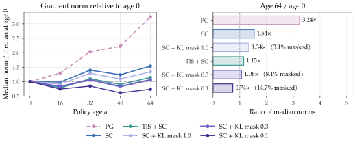
The profile is flat, but what about training? We first look at two settings where staleness is not too large. The first is the setting of the original SC paper, staleness 64: the sampler pulls new weights only once every 64 trainer steps, so the age of a batch climbs from 0 to 64 and then drops back to 0 at each sync. The second is a more common async setup: the sampler syncs weights every step, the buffer drops trajectories older than 32 steps, and the trainer takes the oldest ones first (greedy), so the batch age stays at about 31. In both settings SC alone either collapses or oscillates, while adding any one of TIS, the KL mask or the KL penalty on top of SC stabilizes training, and the final results are close.
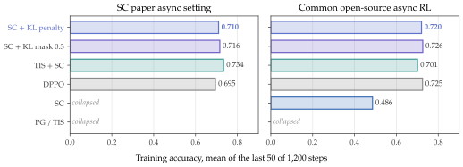
The differences only show up at larger staleness. We enlarge the buffer to 128 steps so that every batch has age 127, and now TIS + SC and MIS + SC start to look off: two TIS + SC seeds drop sharply early on, and one MIS + SC seed falls straight to 0 midway through training, while all three seeds of the KL mask climb steadily. In final level the three are about the same; the real advantage of the KL mask is stability.
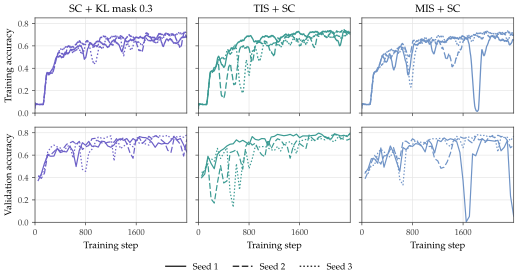
5Combining With The KL Penalty
Since the KL mask alone already stabilizes training, can it be stacked with Yihua's KL penalty from earlier? Recall the design principle: both depend only on the state, not on the sampled token, so stacking them does not bring the drift back, which is why we combine them into a recipe. In full, the recipe maximizes, per token, \[ \mathbb{1}\big[d(s)\le\tau\big]\,\Big(\mathcal{L}_{\mathrm{SC}} \;-\; \beta_{\mathrm{a}}\,D_{\mathrm{KL}}\big(\mu(\cdot\mid s)\,\|\,\pi(\cdot\mid s)\big)\Big),\qquad \beta_{\mathrm{a}} = \frac{\beta_0}{\sqrt{\mathrm{a}}} , \] that is, at positions where \(d(s)\) exceeds the threshold, both the policy term and the KL term are dropped. We compare this recipe with the baselines in three settings with a 128-step buffer: greedy, and random sampling at two learning rates.
- With the KL penalty, training is stable. At learning rate \(4\times10^{-2}\), TIS + SC starts to swing and MIS + SC and DPPO collapse outright, while with the KL penalty, with or without the mask, every seed trains.
- The mask speeds up early learning. Also at \(4\times10^{-2}\), with the penalty alone the accuracy first drops and then slowly climbs back, while with the mask it rises from the start. Why? Early in training the reward signal is still weak, while \(\beta_{\mathrm{a}} = \beta_0/\sqrt{\mathrm{a}}\) is largest at small age, so on states where \(\mu\) and \(\pi\) already differ a lot, the KL term pulls the trainer back toward a sampler that is itself still poor, and this pull can outweigh the signal. The mask removes exactly these states from the update: the pull and the off-policy gradient go away together, and what is left is the signal on states where \(\mu \approx \pi\), so accuracy goes up from the start.
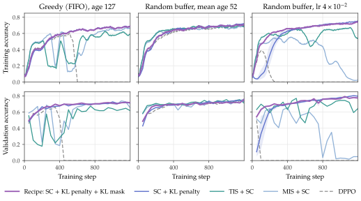
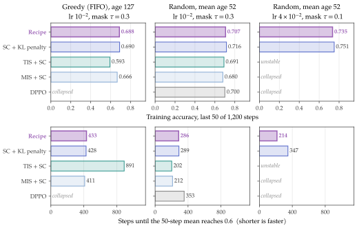
6Beyond The Algorithm: Design Space And Free Lunches In The System
Beyond the algorithm, async RL as a system leaves a lot of design space, and some free lunches. Let us first walk through it at the system level.
In short, async RL is a set of decoupled samplers and a trainer that talk through a buffer. The sampler \(\mu\) generates trajectories with its current weights and puts them into the buffer; the trainer \(\pi\) picks a batch from the buffer by some rule and takes an optimizer step. Concretely, if a trajectory reaches the trainer at step \(k\) and was sampled by \(\mu = \pi_{\theta_{k-\mathrm{a}}}\), then \(\mathrm{a}\) is its policy age. The trainer is then computing gradients on data from an older policy.
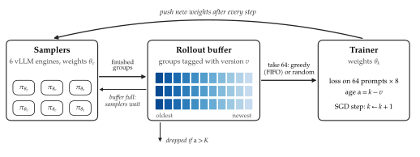
Note that even without touching the loss or the policy gradient, once the rollout buffer holds enough trajectories, simply changing how the trainer samples minibatches from it can change training outcomes. This point gets very little attention in the literature.
For example, the setting used in the original SC paper (staleness 64) does not use a buffer at all. The trainer and the sampler instead synchronize every 64 steps, so the age of each minibatch update is not uniform but follows a sawtooth.
Back to buffer-based sampling. A common small mechanism is a threshold \(K\) on the buffer that dynamically evicts trajectories that are too old (\(\mathrm{a} > K\)), to avoid an overly large gradient mismatch. On top of that, the possible strategies come down to the following three. There is also room for extra knobs, which we skip here.
First in, first out (FIFO): take older trajectories first. It comes in a strict and a non-strict form, depending on whether it skips rollouts in the buffer that have not finished yet; we call the non-strict form greedy. As far as we know, many async RL systems use FIFO or a variant of it. Its advantage is that it wastes as little inference as possible. Its obvious drawback is that every update is built around older trajectories and actively ignores the newer ones in the buffer.
Last in, first out (LIFO): take newer trajectories first, the opposite of FIFO. Its advantage is very low staleness, but its drawback is fatal: it is biased against long trajectories, which then rarely make it into a trainer update, so almost no async RL recipe uses it.
Random sampling (RS): the plainest, uniform random sampling. Its advantage is that it picks up some newer trajectories without biasing against older ones as strongly as LIFO does. As far as we know, some people use variants of it, and for different workloads it is natural to add a knob here to balance staleness against long-trajectory bias. As we show later, without SC, RS also runs into trouble that hurts its stability.
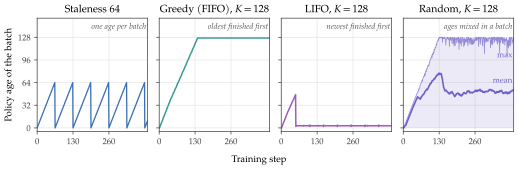
Of the three strategies above, LIFO has the lowest staleness, but its bias against long trajectories is fatal and almost no one uses it. So is it worth switching between the two most common ones, greedy and RS? We compare greedy and RS on the same 128-step buffer, with no prefill on either side. RS has an obvious cost: some groups exceed age \(K\) and are dropped before they are ever drawn, so we pay compute for generations that are never trained on. Fortunately, over 1,200 steps RS spends only 4% to 7% more FLOPs, because training itself dominates the compute. For a fair comparison, the figure below uses actual training time as the x-axis.
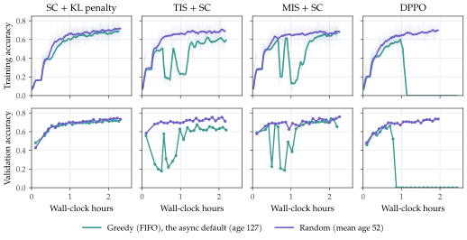
The result: at the same training time, RS is better for every method. TIS + SC and MIS + SC drop sharply under greedy but not under RS, and DPPO collapses outright under greedy. Of course, this comparison mixes two effects, because RS also lowers the mean age from 127 to 52. It is also worth noting, as said earlier, that without SC RS cannot save training either: plain PG collapses under both strategies.
The reason RS works so well is also simple: smaller staleness means a smaller gap between \(\pi\) and \(\mu\), which fits exactly the methodology we proposed for improving recipes on top of SC.
One more point: if RS is this good, can we use it without SC? The answer is not so certain. Recall that without SC, old trajectories have a larger norm and more influence. Under greedy, the grad norms within an optimizer minibatch are all similar, so the gradient itself is fairly stable; under RS the effective batch size shrinks, which makes stability worse.
Of course, a good buffer strategy for async RL is far from as simple as shown here, and RS is not a universal solution. But we hope this discussion of SC and async RL draws more attention to these open problems, such as the bias from long trajectories, the remaining effect of staleness under SC, and the extra rollout cost. Going further, how to strike a better trade-off among staleness, cost and bias remains a research direction worth exploring in depth.
7Conclusion
- We showed visually what SC actually fixes: the drift term that grows with age and lets old trajectories dominate the update.
- We discussed what kind of improvement fits the methodology of SC: start from the gap between \(\mu\) and \(\pi\), and depend only on the state.
- We proposed two methods that mitigate what SC leaves unsolved in async RL, the gap between \(\mu\) and \(\pi\): the state-level KL mask, and a new knob, the buffer sampling strategy.
Acknowledgements
We thank Modal for providing GPUs, Joseph Gonzalez for his advice, and Yingru Li for helpful feedback.
References
- Martin Marek and Max Ryabinin. Score Centering Stabilizes Off-policy Reinforcement Learning. arXiv:2609.20807, 2026.
- Shu Liu, Qi Fang and Shubham Agarwal. Drift and Distance: When Is Score Centering Enough in Async RL? Blog post, 2026.
- Yihua Zhang. Score Function Centering Made Simple: Understanding Trainer-Generator Mismatch in Async RL from the Score Function. Blog post, 2026.
- Yihua Zhang. Score Function Centering: Why a Stale Rollout Does Not Have to Be Importance Sampled. Blog post, 2026.
- Yichuan Wang. From REINFORCE to Score Centering. Talk slides, 2026.
- Feng Yao, Liyuan Liu, Dinghuai Zhang, Chengyu Dong, Jingbo Shang and Jianfeng Gao. Your Efficient RL Framework Secretly Brings You Off-Policy RL Training. Blog post, 2025.
- Jiacai Liu, Yingru Li et al. When Speed Kills Stability: Demystifying RL Collapse from the Training-Inference Mismatch. Blog post, 2025.
- Penghui Qi et al. Rethinking the Trust Region in LLM Reinforcement Learning. ICML 2026. arXiv:2602.04879.
- Yingru Li, Jiacai Liu, Jiawei Xu, Yuxuan Tong, Ziniu Li, Qian Liu and Baoxiang Wang. Trust Region Masking for Long-Horizon LLM Reinforcement Learning. ICML 2026. arXiv:2512.23075.
- Qing Wang, Yingru Li, Jiechao Xiong and Tong Zhang. Divergence-Augmented Policy Optimization. NeurIPS 2019.
- Kanishk Gandhi et al. Stream of Search (SoS): Learning to Search in Language. arXiv:2404.03683, 2024.